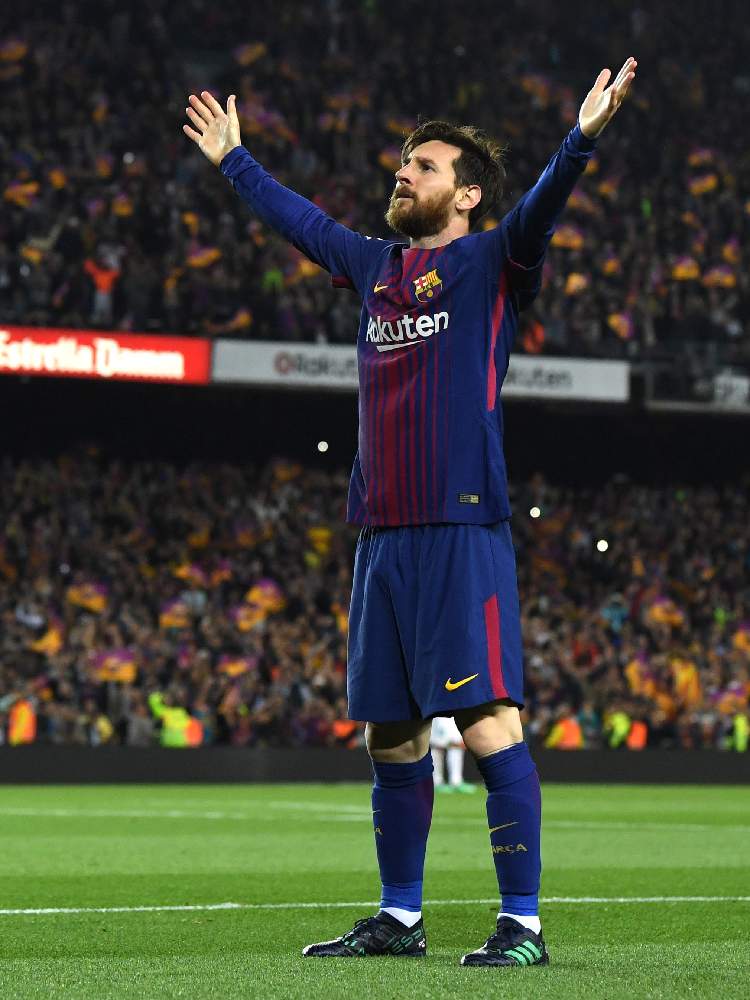
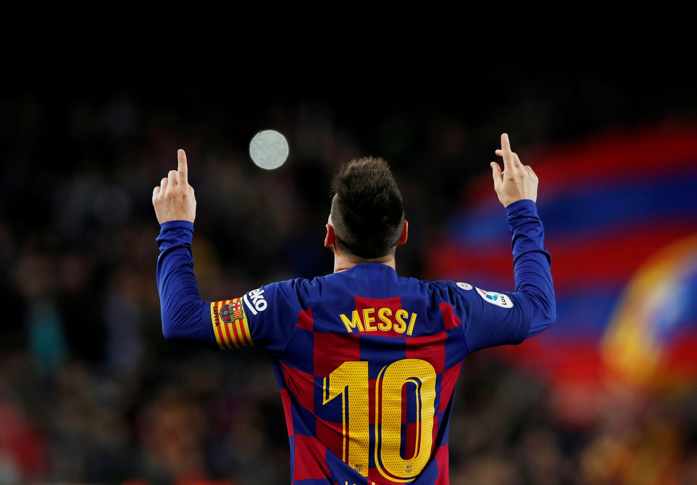
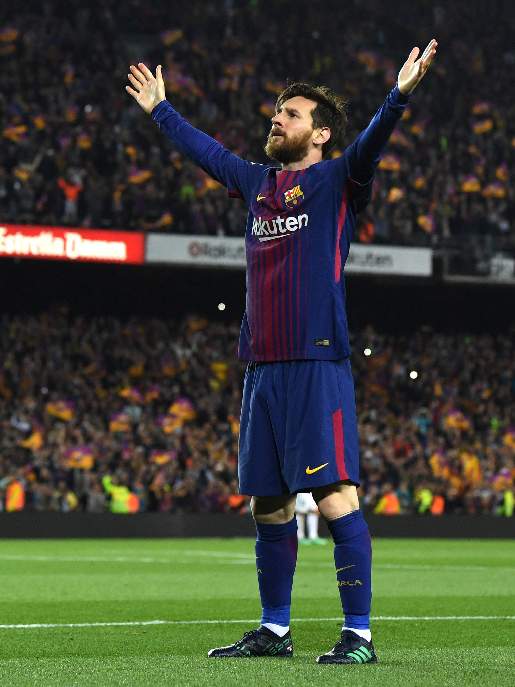
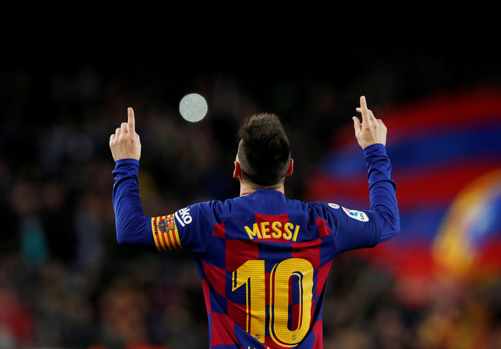
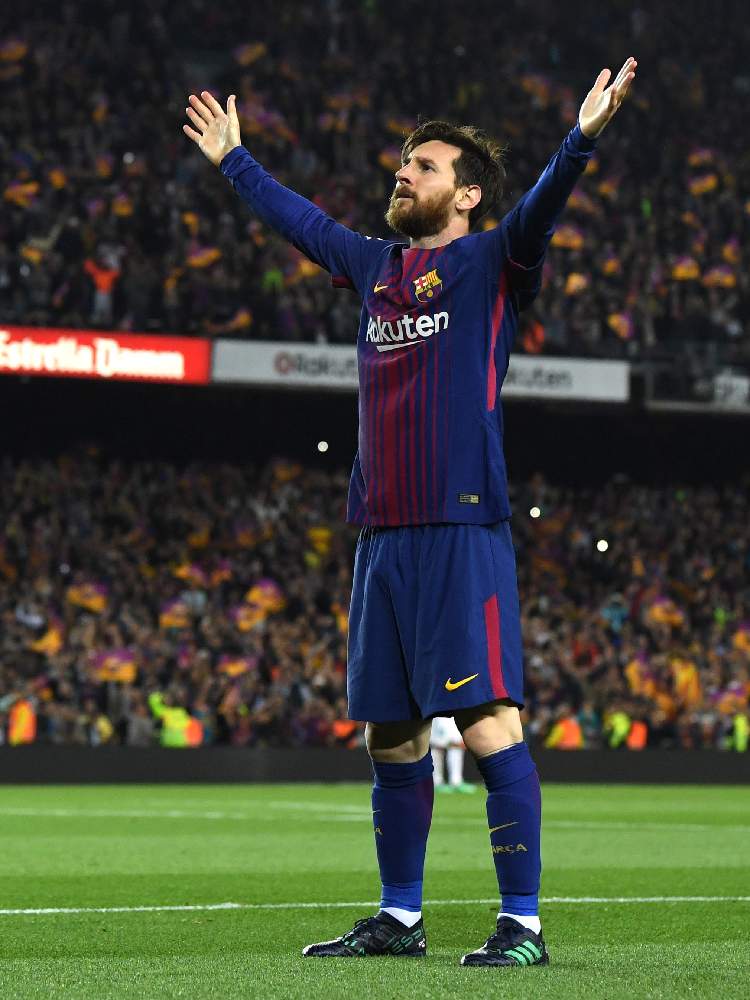
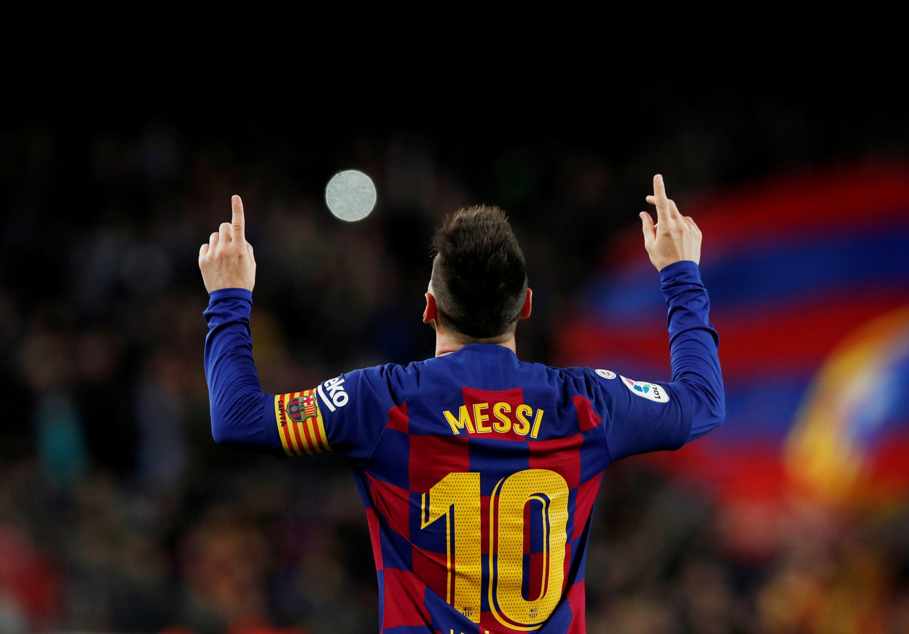
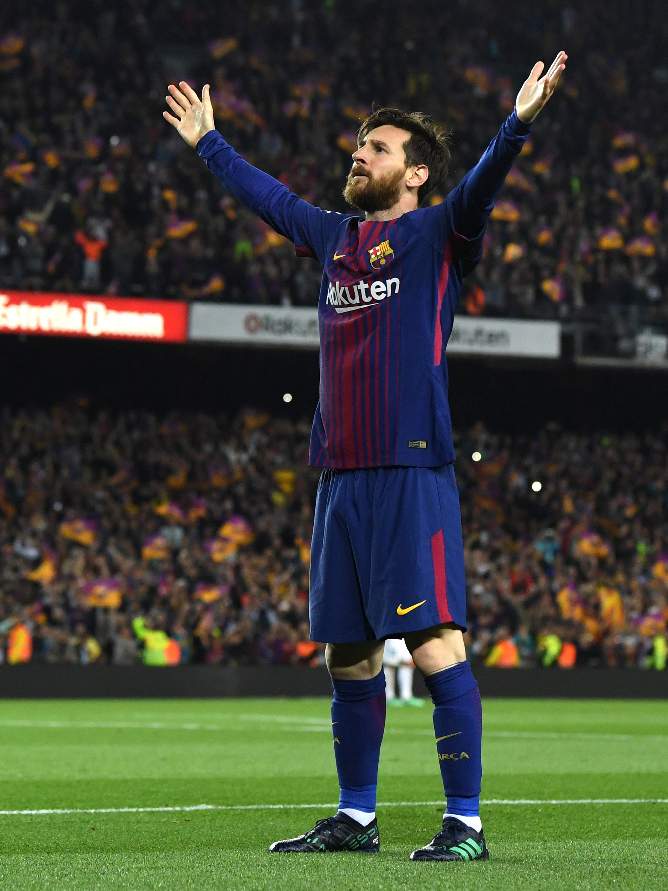
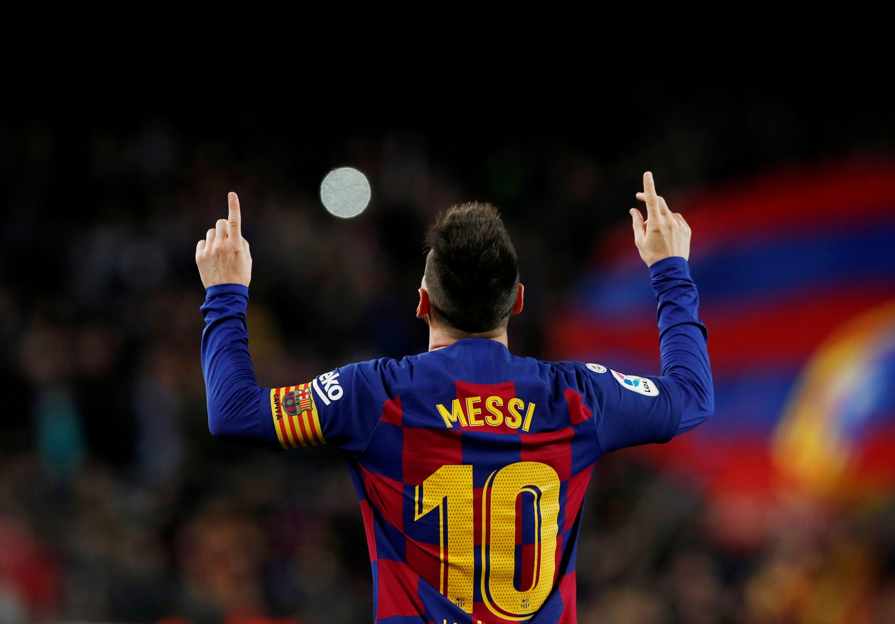

This is a page where I will post all the stuff related Messi
A prodigious talent as a teenager, Messi established himself among the world's best players before age 20. Diego Maradona considered the 18-year-old Messi the best player in the world alongside Ronaldinho, while the Brazilian himself, shortly after winning the Ballon d'Or, commented, "I'm not even the best at Barça", in reference to his protégé.Four years later, after Messi had won his first Ballon d'Or by a record margin, the public debate regarding his qualities as a player moved beyond his status in contemporary football to the possibility that he was one of the greatest players in history. An early proponent was his then-manager Pep Guardiola, who, as early as August 2009, declared Messi to be the best player he had ever seen.
Messi dribbled past the whole Getafe side and slotted the ball in the back of the net.The move started when Xavi passed to Messi on the right, around the halfway line.Messi was quickly closed down by two players, but his lightning fast feet saw him easily go past Paredes and Nacho.Covering 60 metres and only touching the ball 13 times, Messi proceeded to cut inside Alexis and then straightened back up onto goal past Belenguer.
Messi scored one of his most famous goals in a previous cup final clash against Bilbao back in 2015, a wondrous solo effort that saw him evade five challenges before firing home to open the scoring.